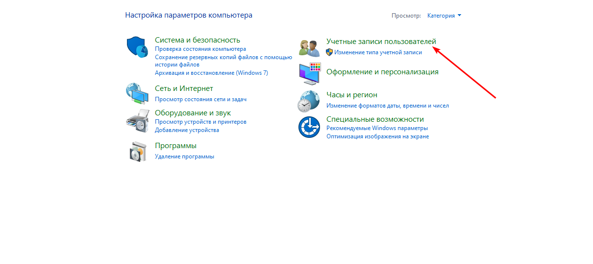
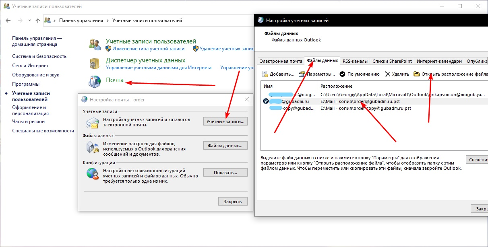
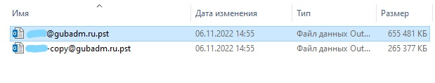
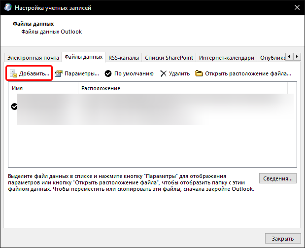
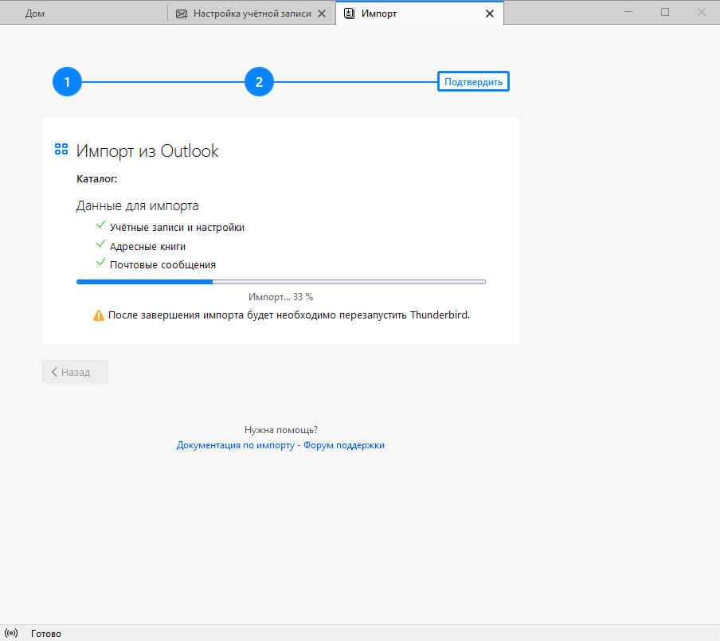
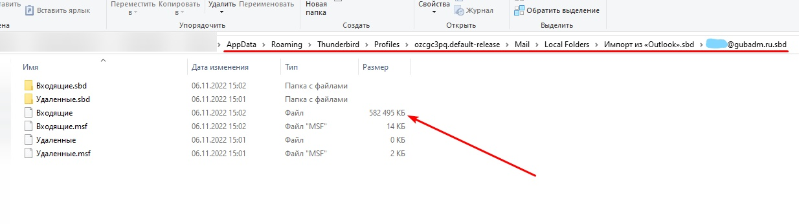
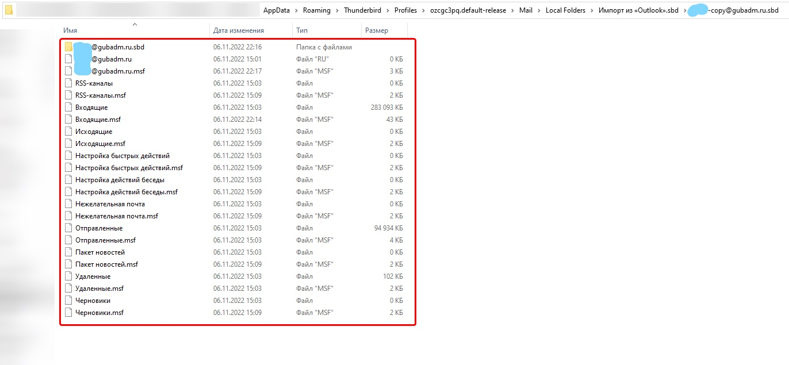
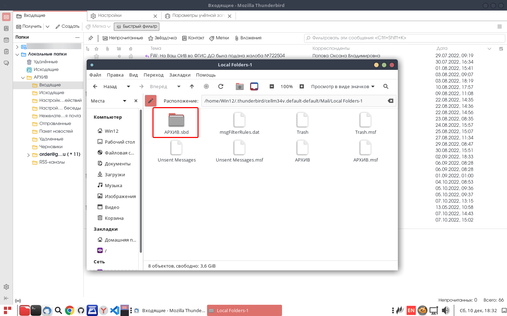

Для переноса необходимо установить Thunderbird на машину где установлен Outlook выше 2010 версии. Если на машине стоит MS Office 2010 года, можно удалить 2010 и установить 2016 года MS Office, либо скопировать файл данных на ПК и начать перенос уже на рабочей версии MS Office 2016
Файл данных Outlook



Добавление файла данных в Outlook
Авторизуемся под учеткой пользователя(или любой другой, для нас главное чтобы мы подцепили файл данных) в Outlook -> Заходим по тому же пути где сгенерировался новый файл данных -> Переносим старый файл данных пользователя -> добавляем наш файл данных к остальным, как показано на скриншоте ниже

Импорт из Outlook в Thunderbird
.png)
.png)
.png)

При переносе может казаться что процесс завис, но как правило если данных слишком много, то перенос займет продолжительное время. Для того чтобы посмотреть сколько данных перенеслось необходимо перейти по следующему пути:
C:\Users\<ИМЯ ПОЛЬЗОВАТЕЛЯ>\AppData\Roaming\Thunderbird\Profiles\<СГЕНЕРИРОВАННЫЕ-СИМВОЛЫ>.default-release\Mail\Local Folders\Импорт из «Outlook».sbd

После того как все данные перенеслись можно скопировать все что находится в папке и перенести в RedOS

Путь к корневым файлам Thunderbird можно найти в параметрах учетной записи
 local folder.png)
Необходимо в корневой папке создать папку АРХИВ.sdb и перенести все файлы которые были перенесены из Outlook'а
